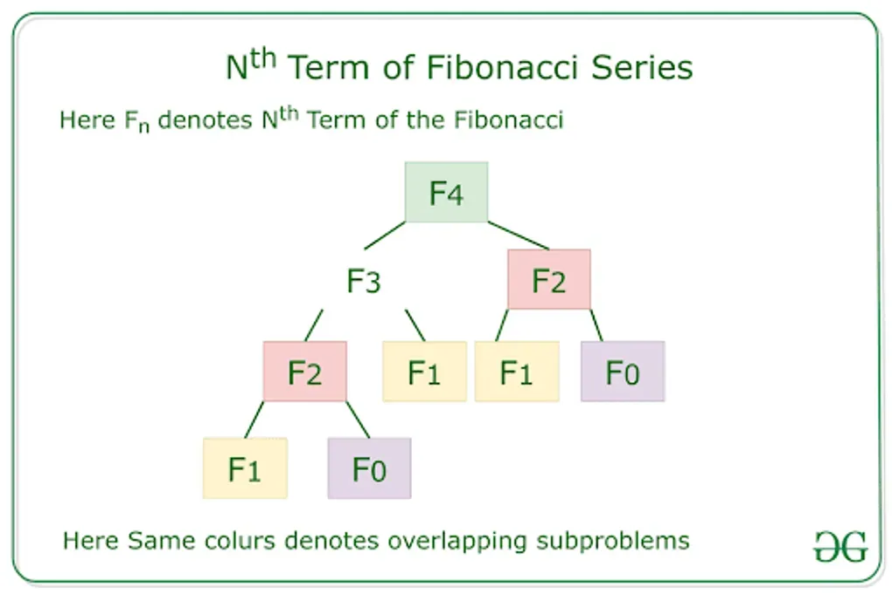

1. Mohó algoritmusok
További részletek
Mi a mohó algoritmus? A mohó algoritmus minden lépésben az aktuálisan optimálisnak tűnő döntést hozza meg, anélkül hogy figyelembe venné a jövőbeli következményeket.
Mikor alkalmazható? A mohó algoritmus nem minden problémára alkalmazható, viszont ahol igen, ott rendkívül gyors és hatékony megoldást nyújt.
Cél: A mohó választás egyetlen részproblémát eredményezzen, amelyből közvetlenül következik az eredeti probléma optimális megoldása.
Előny: Minimalizálja a rekurzív hívások számát, csökkentve a probléma komplexitását.
Korlát: Nem mindig találja meg a globális optimumot, mert a lokális optimumokat globálisként azonosíthatja. Ezért körültekintően kell alkalmazni optimalizálási problémákra.
Példa: Töredékes hátizsák probléma
Youtube vizuális elmagyarázvaProbléma leírása: Van egy hátizsákunk és különböző tárgyaink, amiket bele szeretnénk tenni. Minden tárgynak van értéke és súlya, de a tárgyakat fel is darabolhatjuk.
Cél: A lehető legtöbb értéket vigyük magunkkal a hátizsák súlykorlátján belül.
Mohó megoldás lépései:
- Érték/súly arány kiszámítása minden tárgyra.
- Tárgyak sorba rendezése az arány szerint, csökkenő sorrendben.
- Tárgyak berakása a hátizsákba:
- Ha egy tárgy teljesen belefér a hátizsákba, betesszük.
- Ha nem fér be teljesen, annyit teszünk be belőle, amennyi még befér.
- Ezt addig folytatjuk, amíg a hátizsák meg nem telik.
Eredmény: Ez a megközelítés optimális megoldást ad a töredékes hátizsák problémára, mert mindig a legjobb "ár-érték arányú" tárgyakat választjuk.
2. Oszd-meg-és-uralkodj algoritmusok
További részletek
Lényeg: A problémát kisebb, hasonló jellegű és független (diszjunkt) részfeladatokra bontja.
Mikor hatékony? A részfeladatok valóban függetlenek egymástól és nincsenek ismétlődések.
Az algoritmus három fő lépése:
- Felosztás (Divide): A probléma kisebb részproblémákra bontása.
- Megoldás (Conquer): A részfeladatokat rekurzívan oldja meg, szükség esetén tovább bontva őket.
- Összevonás: A részfeladatok megoldásait összevonja az eredeti probléma megoldásává.
Mi a rekurzió? Egy olyan programozási technika, ahol egy függvény közvetlenül vagy közvetve meghívja önmagát a probléma megoldása során.
Példa: Felező-csúcskereső algoritmus
Probléma: Rendezett adathalmazban keresünk egy elemet.
Lépések:
- Felezzük le a keresési tartomány.
(Osszuk két részre) - Hasonlítsuk össze a keresett elemet a középső elemmel.
- Válasszuk ki a megfelelő felet további keresésre.
- Az 1-3 lépések ismétlése, amíg meg nem találjuk az elemet vagy ki nem derül, hogy nincs benne.
Előny: Sokkal gyorsabb, mint a lineáris keresés, különösen nagy adathalmazok esetén.
3. Dinamikus programozás
További részletek
Definíció: Olyan módszer, amely komplex problémákat kisebb részproblémákra bont, és ezek megoldásait tárolja a későbbi felhasználás céljából.
Főbb jellemzők:
- Alkalmazható, amikor a részproblémák nem függetlenek (nem diszjunkt) egymástól.
- Minden részfeladatot csak egyszer old meg, az eredményeket tárolja.
- Elkerüli a felesleges újraszámításokat, így hatékonyabb más módszereknél.
Két fő megközelítés:
- Iteratív (tabuláció): Részmegoldásokat táblázatba tárolja, minden részmegoldást kiszámol, alulról felfelé építkezik.
(A legkisebb részproblémákkal kezdünk, majd fokozatosan építjük fel a végső megoldást.) - Rekurzív memorizálással: Részmegoldásokat kulcs-érték párokban tárolja, felülről lefelé halad, rekurzívan bontva kisebb részproblémákra.
Alkalmazás: Tipikusan optimalizálási feladatoknál, ahol a cél a legjobb megoldás megtalálása.
Példa: Fibonacci-sorozat
Probléma: Az n-edik Fibonacci-szám kiszámítása.
Dinamikus programozási megoldás:
- Alapesetek definiálása: F(0) = 0, F(1) = 1
- Készítünk egy táblázatot a részeredmények tárolására.
- Minden következő számot az előző kettő összegeként számolunk: F(n) = F(n-1) + F(n-2)
- A táblázat segítségével elkerüljük a többszöri számítást, ezzel jelentősen gyorsítva a folyamatot.
Eredmény: Jelentősen csökkenti a számítási időt a rekurzív megoldáshoz képest, különösen nagyobb számok esetén.
4. D&C vs DP
További részletek
Mi a fő különbség? Bár mindkét módszer részproblémákra bontja a feladatot, a megközelítésük és a részproblémák kezelése eltérő. A dinamikus programozás tárolja és újrahasználja a részeredményeket, míg az oszd-meg-és-uralkodj minden részproblémát függetlenül old meg.
Példa: Fibonacci számítás
- Oszd-meg-és-uralkodj:
- Minden Fibonacci számot többször számol ki
- Például: Fibonacci(5) = Fibonacci(4) + Fibonacci(3), és Fibonacci(4) = Fibonacci(3) + Fibonacci(2), stb.
- Eredmény: Sok ismétlődő számítás és rekurzív hívás
- Időkomplexitás: O(2^n), ami exponenciális növekedést jelent
- Dinamikus programozás:
- Táblázatot használ az összes Fibonacci szám tárolására 1-től n-ig
- A korábbi eredményeket újrafelhasználja
- Például: Fibonacci(5) kiszámításánál felhasználja a már tárolt Fibonacci(4) és Fibonacci(3) értékeket
- Időkomplexitás: O(n), ami lineáris időben oldja meg a problémát
Összefoglalás:
- Oszd-meg-és-uralkodj:
- Részproblémák függetlenek és diszjunktak
- Nincs tárolás vagy memorizálás
- Minden részproblémát újra megoldanak
- Alkalmas olyan problémákra, ahol a részfeladatok nem fednek át
- Dinamikus programozás:
- Részproblémák átfedhetnek
- Tárolja a részeredményeket (memorizálás)
- Elkerüli az ismétlődő számításokat
- Két fő megközelítése: felülről lefelé (memorizálás) és alulról felfelé (tabuláció)
Melyik hatékonyabb? Mindkét módszer hatékony lehet a megfelelő problématípusoknál. Az oszd-meg-és-uralkodj jól működik független részproblémáknál, mint a gyorsrendezés. A dinamikus programozás különösen hasznos olyan problémáknál, ahol sok az ismétlődő részprobléma, mint a hátizsák probléma vagy a legrövidebb út keresése. A dinamikus programozás jelentős teljesítménynövekedést érhet el az eredmények újrafelhasználásával, különösen nagy és komplex problémáknál.